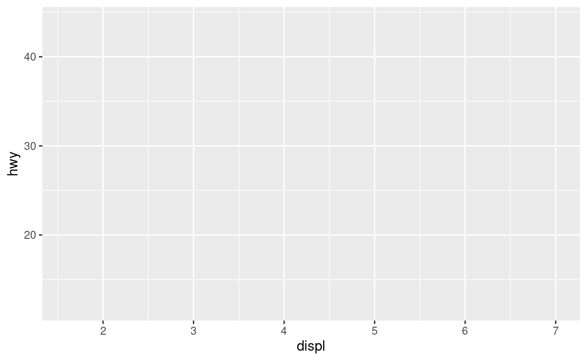
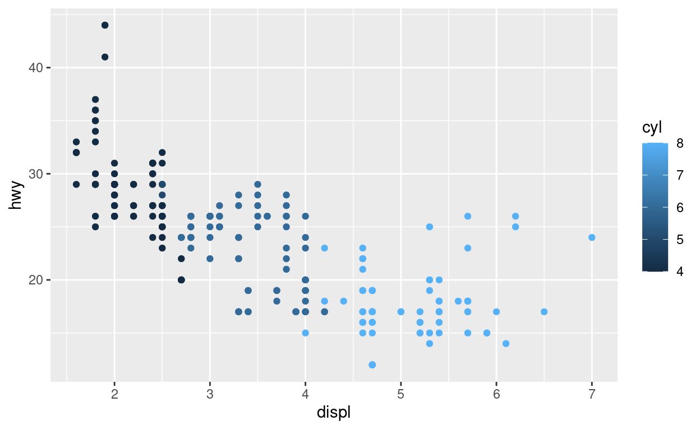
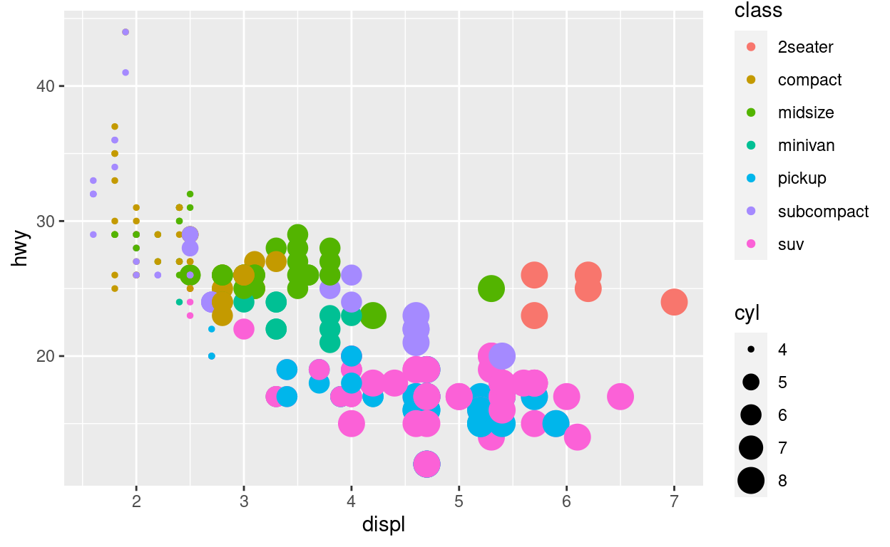
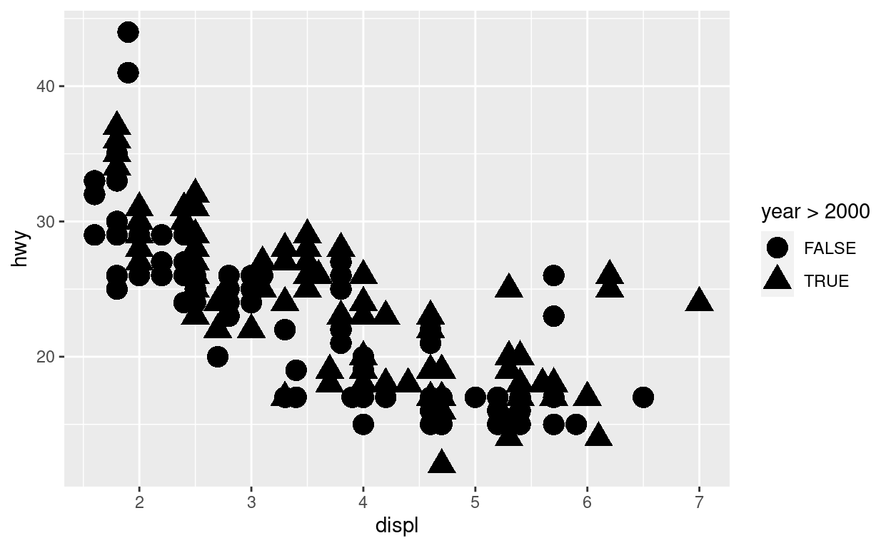
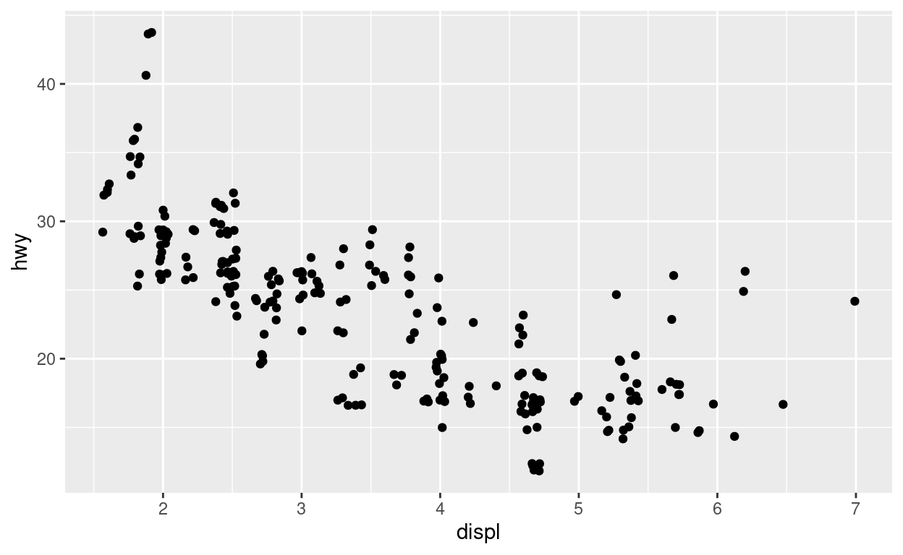

Review - Expressions and Statements
When a program executes, you typically create temporary variables in the RAM of your computer. The values that these variables keep at any point of time during your R program execution is called its state.
An expression is R code that, when run, provides a value (do not change state):
3 + 4Commands that change the state of the program are called statements, such as assignment:
a <- 3 + 4Variables and Assignment
A variable is a box to store data. We put the results of expressions into variables using assignment.
a <- 7
b <- 12
c <- a + b
print(c)## [1] 19Rules for variable names: start with a letter then letters, numbers,
., _.
The REPL and Chunks
When you knit an RMarkdown document, RStudio starts a new process.
Every time it encounters a R chunk it evaluates the R code inside and inserts the output into the document (default; can be changed). Like a behind the scenes REPL.
Order is important
Because statements change the context, order of statements is very important.
a <- 7
a <- 2
print(a) ## [1] 2Working with code chunks, debugging hint
If you run into a problem (for e.g., a weird behavior that you can’t
explain logically), use the Session -> Restart R to
clean up, and the use “Run all chunks above”. Then try the chunk
again.
What can go in variables?
R has several different data types. Some common types:
- Numeric:
7,3.22,9.1e2 - Strings:
"Hello"or'Hello'(also called “character vectors”) - Logicals:
TRUEandFALSE - We’ll see more data types going forward
- These are also referred to as the class of the data.
Why are variables useful?
- Avoid repeatedly typing in the same thing
- Save the results of computations
- Avoid recomputing same values
- Separate what we are computing from any particular input (abstraction)
Exercise: Using variables
Find the difference between 193 and 7. What is this value divided by two? What is this value divided by three? (Only compute the difference once.)Style point: descriptive variable names
- So far we have used names like
aandb. - For large programs, having variable names that describe what they hold is much better
- Compare
atonumber_of_seconds_in_a_day - In RStudio, it’s just as easy to type with
TABcompletion - On HW assignments, we will awarding for good style (readable code)
- You are encouraged to follow the coding style suggested by tidyverse: https://style.tidyverse.org/
Functions
A key tool in any programming language is a function.
- R functions behave (mostly) like mathematical functions \(f(x)\).
- They take arguments and return values
- Encapsulate code (mini-programs)
- Make it easy to repeat operations
Syntax
return_value <- f(argument1, argument2, named_argument = additional_data, ...)- Like math functions, we use the syntax
f()to run the function - All arguments are passed to the
function inside of the
()separated by commas - Arguments can be passed in positional order or
- Passed by name
- Some arguments are optional when they have a default value
...means “any number of additional arguments”return_valueis the output of the function
Defining functions
mult <- function(x, y) {
print(paste('x = ' , x))
x * y
}The mult function takes in two arguments and multiplies
them
mult(2, 10)## [1] "x = 2"## [1] 20mult(y = 5, x = 3)## [1] "x = 3"## [1] 15There are many built-in functions in R that you can simply use.
Function evaluation
In R, when we call a function, first the arguments are evaluated, then the function is called.
mult(2, mult(2,3))## [1] "x = 2"
## [1] "x = 2"## [1] 12Avoiding single use variables
Sometimes we only need to use something once, so taking the time to come up with a variable name is unnecessary.
Instead we can use pipes to pass the output of one function to the first argument of a second function.
value <- f()
g(value)
# pipes
f() |> g()mult(2.5, 3) |> round()## [1] "x = 2.5"## [1] 8In older R programs, you also see another notation for pipe
%>%. With this notation the same expression can be
mult(2.5, 3) %>% round## [1] "x = 2.5"## [1] 8Note: We did not have to put the pair of parenthesis for this notation. If you do put, it doesn’t hurt
R’s assignment operators
R has two ways to store data in variables:
variable_arrow <- 7
variable_equal = 10
variable_arrow + variable_equal## [1] 17Arrow can also be reversed
7 -> variable_reversed
pi * variable_reversed## [1] 21.99115pi |> sqrt() -> sqrt_pi
sqrt_pi## [1] 1.772454There is a subtle difference between using = and
->. For example, the below function does not work if you
use arrow. So for any function call key/value arguments, you have to use
=
x = c(10)
try_me <- function(y = x){
print(y)
}
try_me(x)## [1] 10Some special values
R has special data values
NAmeans “missing”. Including aNAvalue in a calculation will usually make the result alsoNA.NULLmeans “not set yet” and is often used for optional arguments to functionsNaNmeans something was divided by zero or other mathematical impossibility.
What will happen with this code?
values = c(1, 2, NA)
mean(values)## [1] NAInstead add the keyword argument na.rm = T to instruct
the function to first remove all the NA values and then compute the
mean
mean(values, na.rm = T)## [1] 1.5Let us try a few more expressions with NA
Lists and Vectors
- A vector is an ordered collection of the same type
of data. Created using the
cfunction (concatenate). - A list is an ordered collection of (potentially)
different types of data. Created using the
listfunction. - Both can have names to indicate individual items.
Vector example
phone_digits <- c(8, 6, 7, 4, 3, 0, 9)
phone_plus_area_code <- c(7, 3, 4, phone_digits)
print(phone_plus_area_code)## [1] 7 3 4 8 6 7 4 3 0 9length(phone_plus_area_code)## [1] 10sum(phone_plus_area_code)## [1] 51str_flatten(phone_plus_area_code)## [1] "7348674309"We will learn more on str functions when we learn Strings.
List example
Lists are heterogeneous while vectors are homogeneous
mixed_type_list <- list(3, 4, phone_digits)
mixed_type_list## [[1]]
## [1] 3
##
## [[2]]
## [1] 4
##
## [[3]]
## [1] 8 6 7 4 3 0 9list("umich", 1, T)## [[1]]
## [1] "umich"
##
## [[2]]
## [1] 1
##
## [[3]]
## [1] TRUEc("umich", 1, T)## [1] "umich" "1" "TRUE"Vectors, indexing
The runif function will create randomly generated values
in the range (0, 1).
random_u01 <- runif(10) # create 10 values
print(random_u01)## [1] 0.4159996 0.7831830 0.7653995 0.1960347 0.9429670 0.9723797 0.7099397
## [8] 0.8756441 0.9442157 0.5258580random_u01[1] # first item## [1] 0.4159996random_u01[10] # last item## [1] 0.525858random_u01[-1] # all but first## [1] 0.7831830 0.7653995 0.1960347 0.9429670 0.9723797 0.7099397 0.8756441
## [8] 0.9442157 0.5258580random_u01[1:3] # first three## [1] 0.4159996 0.7831830 0.7653995random_u01[c(1, 3, 7, 1)]## [1] 0.4159996 0.7653995 0.7099397 0.4159996Relational Operators
x <- 1
y <- 2
x < y## [1] TRUEx > y## [1] FALSEx <= y## [1] TRUEx >= y## [1] FALSEx == y## [1] FALSEx != y## [1] TRUE!(x == y) # negation## [1] TRUEVectors, subsetting using relational operators
random_u01## [1] 0.4159996 0.7831830 0.7653995 0.1960347 0.9429670 0.9723797 0.7099397
## [8] 0.8756441 0.9442157 0.5258580less_than_0.5 <- random_u01 < 0.5
print(less_than_0.5)## [1] TRUE FALSE FALSE TRUE FALSE FALSE FALSE FALSE FALSE FALSErandom_u01[less_than_0.5]## [1] 0.4159996 0.1960347keep(random_u01, random_u01 < 0.5)## [1] 0.4159996 0.1960347random_u01[!less_than_0.5]## [1] 0.7831830 0.7653995 0.9429670 0.9723797 0.7099397 0.8756441 0.9442157
## [8] 0.5258580Named collections
Vectors can have names
(c(first = 1, second = 22, third = 333)), but names for
lists are more common.
named_list <- list(a_string = "A string", a_vector = 1:4)
named_list[["a_string"]] # note double brackets## [1] "A string"named_list$a_vector## [1] 1 2 3 4Tables in R
In data analytics we often work with Tabular data where:
- columns are variables
- rows are observations
A tabular data is presented using a tibble or
data.frame. When we construct new tabular data, we will use
tibble as that is a better data structure than
data.frame. However many existing libraries use
data.frame. We will treat them interchangeably for the most
part.
You construct a simple tibble with two columns named a
and b as shown below
tibble(a = c(1:10),
b = c(11:20))There are many tabular datasets readily available when we load
tidyverse among them mpg is one of them. There
are many functions you can use on the tibble and here we will see some
of them
glimpse(mpg)## Rows: 234
## Columns: 11
## $ manufacturer <chr> "audi", "audi", "audi", "audi", "audi", "audi", "audi", "…
## $ model <chr> "a4", "a4", "a4", "a4", "a4", "a4", "a4", "a4 quattro", "…
## $ displ <dbl> 1.8, 1.8, 2.0, 2.0, 2.8, 2.8, 3.1, 1.8, 1.8, 2.0, 2.0, 2.…
## $ year <int> 1999, 1999, 2008, 2008, 1999, 1999, 2008, 1999, 1999, 200…
## $ cyl <int> 4, 4, 4, 4, 6, 6, 6, 4, 4, 4, 4, 6, 6, 6, 6, 6, 6, 8, 8, …
## $ trans <chr> "auto(l5)", "manual(m5)", "manual(m6)", "auto(av)", "auto…
## $ drv <chr> "f", "f", "f", "f", "f", "f", "f", "4", "4", "4", "4", "4…
## $ cty <int> 18, 21, 20, 21, 16, 18, 18, 18, 16, 20, 19, 15, 17, 17, 1…
## $ hwy <int> 29, 29, 31, 30, 26, 26, 27, 26, 25, 28, 27, 25, 25, 25, 2…
## $ fl <chr> "p", "p", "p", "p", "p", "p", "p", "p", "p", "p", "p", "p…
## $ class <chr> "compact", "compact", "compact", "compact", "compact", "c…class(mpg)## [1] "tbl_df" "tbl" "data.frame"dim(mpg)## [1] 234 11colnames(mpg)## [1] "manufacturer" "model" "displ" "year" "cyl"
## [6] "trans" "drv" "cty" "hwy" "fl"
## [11] "class"head(mpg)Accessing individual columns
Recall, the $ operator lets us get items from lists:
mpg$hwy |> mean() # equiv to mean(mpg$hwy)## [1] 23.44017Other functions for basic descriptive statistics
sum(mpg$hwy)## [1] 5485var(mpg$hwy)## [1] 35.45778sqrt(var(mpg$hwy)) # standard deviation## [1] 5.954643median(mpg$hwy)## [1] 24IQR(mpg$hwy)## [1] 9quantile(mpg$hwy, c(0.25, 0.75))## 25% 75%
## 18 27All at once
summary(mpg)## manufacturer model displ year
## Length:234 Length:234 Min. :1.600 Min. :1999
## Class :character Class :character 1st Qu.:2.400 1st Qu.:1999
## Mode :character Mode :character Median :3.300 Median :2004
## Mean :3.472 Mean :2004
## 3rd Qu.:4.600 3rd Qu.:2008
## Max. :7.000 Max. :2008
## cyl trans drv cty
## Min. :4.000 Length:234 Length:234 Min. : 9.00
## 1st Qu.:4.000 Class :character Class :character 1st Qu.:14.00
## Median :6.000 Mode :character Mode :character Median :17.00
## Mean :5.889 Mean :16.86
## 3rd Qu.:8.000 3rd Qu.:19.00
## Max. :8.000 Max. :35.00
## hwy fl class
## Min. :12.00 Length:234 Length:234
## 1st Qu.:18.00 Class :character Class :character
## Median :24.00 Mode :character Mode :character
## Mean :23.44
## 3rd Qu.:27.00
## Max. :44.00Dealing with missingness
To delete the missing values we have some options. Let us look into
the storms data; another tabular data provided by NOAA
Atlantic hurricane database representing the positions and attributes of
storms from 1975-2022.
storms$category |> mean()## [1] NAstorms$category |> mean(na.rm = T)## [1] 1.89569na.omit(storms$category) |> mean()## [1] 1.89569storms$category[!is.na(storms$category)] |> mean()## [1] 1.89569Plotting: Visual representation of data
Graphing or plotting is the representation of data in a visual form, typically on a 2D plane.
Humans have a wonderful ability to process visual stimuli quickly.
Great for displaying large data sets that might be difficult to describe.
But Plotting ain’t easy
- What exactly can we put in a plot?
- How to connect the plot to data?
- What are our goals for the plot?
- What additional information is necessary to understand the plot?
The Semiology of Graphics
In 1967, Jacques Bertin published the Semiology of Graphics to describe common elements of plots and what they could achieve.
Bertin described two ways of thinking about plots:
- Visual (“retinal”) variables: connections between objects in the plot and underlying data
- Relationship what types of relationships can the visual variables express
Visual variables/retinal variables:
- Position/planar dimensions
- Size (small to large)
- Value (light to dark)
- Texture (pattern)
- Color (discrete or continuously varying)
- Orientation (angle/rotation)
- Shape (usually distinct shapes)
The Grammar of Graphics and ggplot
A follow up to Bertin’s work was The Grammar of Graphics by Leland Wilkinson. This book described a programming language for graphics based on ideas in Bertin’s system.
The GoG was implemented for R in ggplot (and later
replaced by ggplot2).
The main components of a ggplot graph
- The graph object itself (creating using
ggplot(data)) - A set of aesthetic mappings (connecting data to visual variables)
- Layers: collections of geometric elements (
geom_*()) and statistical transformations (stat_*()) - Scales: information on the range or composition of variables
- Coordinate systems: how the data are arranged spatially
- Facet: breaking a single plot into many, similar plots by grouping the data into multiple facets
- Theme: all the other color and printing aspects of the plot
Creating a ggplot
Start use the ggplot function to start our plot
efficiency <- ggplot(data = mpg)
efficiency # for now, blank
What can we plot? Let us take a glimpse of the dataset
glimpse(mpg)## Rows: 234
## Columns: 11
## $ manufacturer <chr> "audi", "audi", "audi", "audi", "audi", "audi", "audi", "…
## $ model <chr> "a4", "a4", "a4", "a4", "a4", "a4", "a4", "a4 quattro", "…
## $ displ <dbl> 1.8, 1.8, 2.0, 2.0, 2.8, 2.8, 3.1, 1.8, 1.8, 2.0, 2.0, 2.…
## $ year <int> 1999, 1999, 2008, 2008, 1999, 1999, 2008, 1999, 1999, 200…
## $ cyl <int> 4, 4, 4, 4, 6, 6, 6, 4, 4, 4, 4, 6, 6, 6, 6, 6, 6, 8, 8, …
## $ trans <chr> "auto(l5)", "manual(m5)", "manual(m6)", "auto(av)", "auto…
## $ drv <chr> "f", "f", "f", "f", "f", "f", "f", "4", "4", "4", "4", "4…
## $ cty <int> 18, 21, 20, 21, 16, 18, 18, 18, 16, 20, 19, 15, 17, 17, 1…
## $ hwy <int> 29, 29, 31, 30, 26, 26, 27, 26, 25, 28, 27, 25, 25, 25, 2…
## $ fl <chr> "p", "p", "p", "p", "p", "p", "p", "p", "p", "p", "p", "p…
## $ class <chr> "compact", "compact", "compact", "compact", "compact", "c…“Aesthetic” mappings connect columns to visual variables
efficiency <- ggplot(data = mpg,
aes(x = displ, y = hwy, color = cyl))
efficiency displ: engine displacement is the measure of the total volume of all the cylinders in an internal combustion engine. hwy: highway miles/gallon cyl: number of cylinders
But the chart is still blank? Well we need to add the geometric layer to define how to display the visual elements
Geometries: objects on the plot
We will use a geometry function (have the form
geom_TYPE()).
efficiency + geom_point()
Alternative forms
ggplot(data = mpg) + geom_point(aes(x = displ, y = hwy, color = cyl))
mpg |> ggplot() + geom_point(aes(x = displ, y = hwy, color = cyl))Exercise: Great Lakes water levels
Here’s a data set from the US Army Corps of Engineers showing the height of the Great Lakes (with Michigan and Huron being one body) above sea level, aggregate by year.
glwl <- read_csv("data/GLHYD_data_english_cleaned.csv.gz") |>
group_by(body, year) |> summarize(ht = median(height_ft)) |> ungroup()## Rows: 6300 Columns: 4
## ── Column specification ────────────────────────────────────────────────────────
## Delimiter: ","
## chr (2): month, body
## dbl (2): year, height_ft
##
## ℹ Use `spec()` to retrieve the full column specification for this data.
## ℹ Specify the column types or set `show_col_types = FALSE` to quiet this message.
## `summarise()` has grouped output by 'body'. You can override using the `.groups` argument.glwlUse this data set to make a scatter plot of the height of each lake
in each year, colored by which body the reading is
from.
Improve your plot by changing it to a geom_line()
What aesthetic mappings can I use?
Trying out some other mappings
ggplot(data = mpg,
aes(x = displ, y = hwy, size = cyl, color = class)) +
geom_point()
Visit the docs to learn more: geom_point
Using expressions
We can also use expressions involving columns.
ggplot(data = mpg, aes(x = displ, y = hwy, shape = year > 2000)) +
geom_point()
Overriding parameters for all points
We can pass in constants that apply to all points (size and transparency):
ggplot(data = mpg, aes(x = displ, y = hwy, shape = year > 2000)) +
geom_point(size = 5)
Jitter: useful noise
ggplot(data = mpg, aes(x = displ, y = hwy)) +
geom_point(position = "jitter")
List of geometries
General observations
- Generally limit plots to having 3 or 4 distinct visual variables
- Typically only one geometry type, but there are some great counter examples
- Almost everything can be tweaked in ggplot, finding it is the tricky part
- The R Graph Gallery is a great source of inspiration and instruction
homework/example-homework.Rmd
Using an example homework file, we’ll answer a few questions and prepare our HW for submission.
After running all code, it turns the markdown into a web page
(example-homework.Rmd =>
example-homework.html)